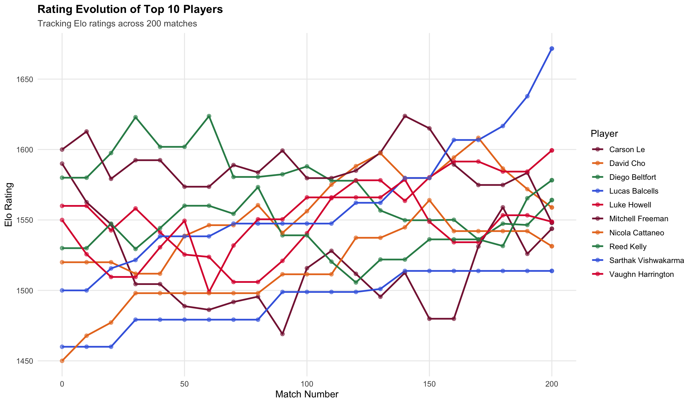

VT Club Tennis Elo Ranking System
1 1. From Challenge Ladder to Elo: A More Quantitative Approach
1.1 Previous Challenge Ladder System
VT Club Tennis previously used a traditional challenge ladder system with the following rules:
Challenge Rules (Legacy System):
- Everyone on the team must challenge someone at least once a semester (except for the #1 ranked player)
- If you’re ranked inside the top 10, you can challenge someone a maximum of 3 spots above you
- If you’re ranked outside the top 10, you can challenge someone a maximum of 5 spots above you (but cannot challenge past #7)
- If you’re ranked outside the top 20, you can challenge someone a maximum of 7 spots above you (but cannot challenge past #16)
- All challenge matches are best of 3 sets
- You may only challenge the same player once a month
- Injured players are not eligible to compete in challenge matches
- Please challenge other members via email, copying vtmensclubtennis@gmail.com
- Players have 48 hours to respond to a challenge
- The challenge match must be played within 7 days after acceptance
1.2 Why We’re Moving to Elo
While the challenge ladder system served us well, we’re transitioning to an Elo rating system to create a more quantitative and linear ranking approach. Here’s why:
Problems with the Traditional System: - Arbitrary restrictions: Different challenge limits for different ranking tiers created complexity - Limited mobility: Top players were harder to challenge, creating ranking stagnation - Binary outcomes: Win/loss only, no consideration of opponent strength - Administrative burden: Tracking challenge eligibility, timing, and violations required constant oversight
Benefits of Elo: - ✅ Linear and quantitative: Everyone has a numerical rating that changes predictably - ✅ No artificial barriers: Any player can play anyone, anytime - ✅ Rewards skill-appropriate competition: Beating stronger players = bigger rating gains - ✅ Self-regulating: No need to track who can challenge whom - ✅ Transparent: Everyone can see exactly how ratings change after each match - ✅ Fairer assessment: Your rating reflects your true skill level over time
2 2. What is the Elo Rating System?
Think of Elo like a video game ranking system where everyone starts at the same level. When you win matches, you gain points; when you lose, you lose points. The cool part? Beating stronger players earns you more points than beating weaker ones.
2.1 Key Concepts:
- Everyone starts with an initial rating (assigned based on current ladder position)
- Win = gain points, Lose = lose points
- Bigger upset = bigger point swing
- The system balances itself - ratings reflect true skill over time
3 3. How Does It Work? (Simple Explanation)
3.1 Step 1: Predict the outcome
Before each match, we calculate who should win based on current ratings.
Example: Player A (1400 rating) vs Player B (1300 rating) - Player A is expected to win about 64% of the time - Player B is expected to win about 36% of the time
3.2 Step 2: Compare prediction to reality
After the match, we see what actually happened and compare it to the prediction.
3.3 Step 3: Adjust ratings
- If the favorite wins: Small point change (expected result)
- If the underdog wins: Large point change (upset!)
The formula is simple:
New Rating = Old Rating + K × (Actual Result - Expected Result)Where: - K = How many points are at stake (32 for new players, 12-24 for experienced players) - Actual Result = 1 if you won, 0 if you lost - Expected Result = Probability you were supposed to win (0 to 1)
4 4. Let’s See It In Action: VT Club Tennis Roster Simulation
We’ll apply the Elo rating system to the actual VT Club Tennis men’s roster and simulate a season of matches to see how rankings evolve.
4.1 Initial Roster
Here are the 40 members of the VT Club Tennis men’s team, starting with their current ladder rankings:
4.2 Match 1: Alice vs Bob (Both start at 1300)
| name | rating |
|---|---|
| Alice | 1300 |
| Bob | 1300 |
| Charlie | 1300 |
Before Match: - Alice: 1300 rating - Bob: 1300 rating - Expected Result: 50-50 (both equal)
Alice wins!
Calculation: - K-factor: 32 (both are new players) - Alice expected to win: 0.50 (50%) - Alice actually won: 1.0 (100%) - Point change: 32 × (1.0 - 0.50) = +16 points
| name | old_rating | expected | actual | change | new_rating |
|---|---|---|---|---|---|
| Alice | 1300 | 50% | Won | +16 | 1316 |
| Bob | 1300 | 50% | Lost | -16 | 1284 |
After Match 1:
| rank | name | rating |
|---|---|---|
| 1 | Alice | 1316 |
| 2 | Charlie | 1300 |
| 3 | Bob | 1284 |
4.3 Match 2: Alice vs Charlie (Alice now favored)
Before Match: - Alice: 1316 rating (favorite) - Charlie: 1300 rating (underdog) - Expected: Alice should win 52% of the time
Charlie wins! (UPSET)
Calculation: - K-factor: 32 (both still new) - Charlie expected to win: 0.48 (48%) - Charlie actually won: 1.0 (100%) - Point change: 32 × (1.0 - 0.48) = +17 points (more than Match 1 because of the upset!)
| name | old_rating | expected | actual | change | new_rating |
|---|---|---|---|---|---|
| Charlie | 1300 | 48% | Won | +16.7 | 1316.7 |
| Alice | 1316 | 52% | Lost | -16.7 | 1299.3 |
After Match 2:
| rank | name | rating |
|---|---|---|
| 1 | Charlie | 1316.7 |
| 2 | Alice | 1299.3 |
| 3 | Bob | 1284.0 |
4.4 Simulating a Season of Matches
Now let’s simulate 200 random matches to see how the rankings evolve over time. The simulation assumes:
- Players closer in the ladder are more likely to play each other
- Higher-ranked players win more often, but upsets happen
- Every match updates both players’ ratings using the Elo formula
4.5 Final Rankings After 200 Matches
Here’s how the ladder looks after the simulation. Notice how some players have moved significantly from their initial positions!
4.6 Rating Evolution for Top 10 Players
This chart shows how the ratings of the top 10 players evolved throughout the 200-match season:

4.7 Match Activity Summary
| Player | Total Matches | Wins | Losses | Win Rate (%) |
|---|---|---|---|---|
| Carson Le | 37 | 17 | 20 | 45.9 |
| Nico Bermudez | 26 | 11 | 15 | 42.3 |
| Diego Beltfort | 24 | 14 | 10 | 58.3 |
| Mitchell Freeman | 23 | 13 | 10 | 56.5 |
| Austin Victory | 23 | 9 | 14 | 39.1 |
| Reed Kelly | 23 | 14 | 9 | 60.9 |
| Luke Howell | 20 | 12 | 8 | 60.0 |
| David Cho | 20 | 13 | 7 | 65.0 |
| Vaughn Harrington | 18 | 9 | 9 | 50.0 |
| Andrew Kim | 18 | 7 | 11 | 38.9 |
| Rodrigo Lopez | 15 | 7 | 8 | 46.7 |
| Sarthak Vishwakarma | 14 | 14 | 0 | 100.0 |
| Eric Yoo | 12 | 5 | 7 | 41.7 |
| Nicola Cattaneo | 11 | 9 | 2 | 81.8 |
| Harisharan Baskaran | 11 | 6 | 5 | 54.5 |
4.8 Key Insights from the Simulation
- Rankings Changed: The simulation shows natural movement in the ladder as players compete
- Higher-Rated Players Win More: But upsets still happen, making the system dynamic
- Activity Matters: Players who played more matches had more opportunities to climb or fall
- Elo is Self-Correcting: Over time, ratings stabilize to reflect true skill levels